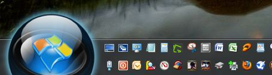

**[UPDATED!] 255-frame Animations described in the 4th Post of this thread**
.
The format "32-bit PNG" seems to confuse many people, so i'll explain it here, and how to make a custom Start Menu Orb.
The above orb set was created by Wesley, available here: viewtopic.php?f=18&t=194&p=1667#p1667_____________________
*Step 1 - Create Start Menu Orb:
- Make a new image thats 200wx200h with a transparent background
- Create the image as you want your Start Menu Orb to look in its normal state
- Its a good Idea to test your image as small as 30x30 and as big as 200x200 to be sure it still looks good
- Resize the Canvas to 200w600xh
- Duplicate your original image two times, so you have 3 layers, and center the other two in the 200-400 & the 400-600 square
- Edit the middle image to be your hot state, as you want it to look when the cursor is moved over the start button
- Edit the bottom on the bottom as you want it to look when the start button its pressed
- Be sure you are working in 8-bit mode using Transparency (Transparent Background)
- Click Save, in most programs transparency will be saved automatically, adding a 4th 8-bit channel (Alpha) to the Three 8-bit color channels: 8-bit Red, 8-bit Green & 8-bit Blue (RGB 24-bit).. meaning most PNG's will automatically be saved as 32-bit images (RGBa)
- If it gives you an option to save it as 24-bit, select that, and also select "Transparency" checkbox, 24+8=32
- Save the image
.
*You can create any size square image you like, such as 150x150, just be sure its centered, and your graphic occupies the space, then just triple the pixel height when you resize the canvas (150x3=450, so resize a 150x150 image to 150w x 450h, etc.. and it doesnt have to be square, so long as the widths are all the same, depending on how you want it to look, or sit..etc ).. .
**Its important NOT to work in 16-bit or 32-bit mode when creating your PNG, only 8-bit.. as that setting is per channel, so 32-bit CMYK would would be 128-bit.. PNG doesnt support CMYK, and 32-bit doesnt support Alpha transparency, so 32-bit mode would create 96-bit 3-channel (RGB) .PNG image, but you must have only a 32-bit image for most any custom PNG graphic having to do with Windows _____________________
*Step 2 - Set it as your Start Menu Orb- Save your PNG image to a permanent location with a path name will not be moved or changed
- Right-click your Classic Shell Orb & go to Settings:
- Click the "Start Button" tab
- Under "Button Look" select "Custom Button"
- Click "Button Image" and click the "..."
- Browse to your new custom image
- Under "Button Size" select any size you want your button to be
- Between 30 & 50 for single row task bar, or up to 70 or more if you want it bigger
- Between 70 & 100 if you use a double-row taskbar, or as high as 200 if you like a real big one
- The example above is size 170
- Click OK